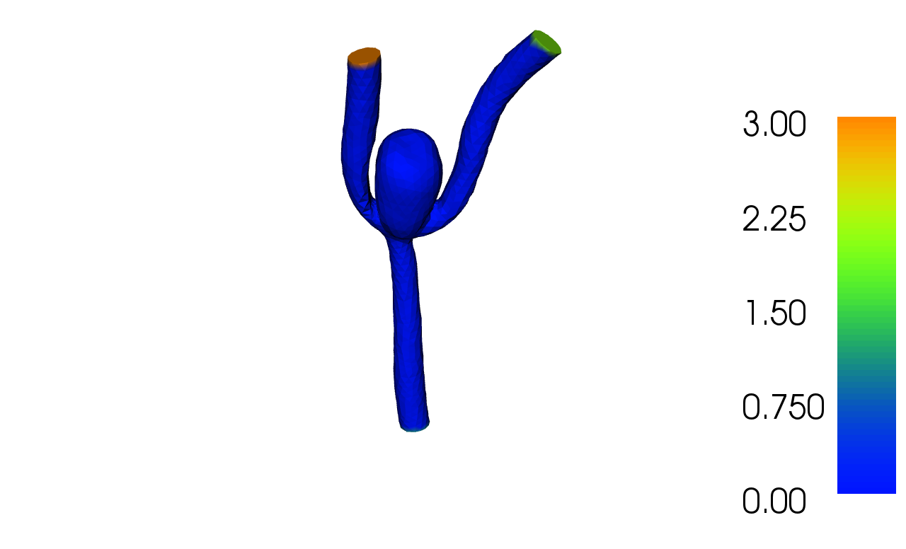

2. Set boundary conditions for meshes that include boundary indicators¶
This demo is implemented in a single python file, demo_bcs.py,
which contains both the variational form and the solver.
This demo illustrates how to:
- Use meshes with boundary indicators
- Solve the Poisson equation with Dirichlet boundary values
The solution for \(u\) in this demo will look as follows:
{kind=link}
2.1. Equation and the problem definition¶
We will use the Poisson equation as a model problem when we demonstrate how to set boundary conditions for an imported mesh that includes boundary indicators. The Poisson equation is the canonical elliptic partial differential equation. For a domain \(\Omega \subset \mathbb{R}^3\) with boundary \(\partial \Omega = \cup_{i = 0}^3 \Gamma_{D, i}\), the Poisson equation with particular boundary conditions reads:
Here, \(f\) is some given input data and \(u_0\), \(u_1\), \(u_2\) and \(u_3\) are the prescribed values of \(u\) at the boundaries. The variational form of the Poisson equation reads: find \(u \in V\) such that
where \(V\) is a suitable function space and
The expression \(a(u, v)\) is the bilinear form and \(L(v)\) is the linear form. It is assumed that all functions in \(V\) satisfy the Dirichlet boundary conditions.
In this demo we shall consider the domain \(\Omega\) to be a model of blood vessels with an aneurysm. It has one inlet vessel and two outlet vessels. We define noslip boundary conditions on the walls of the vessels and aneurysm, that is \(u = u_0 = 0.0\). We let \(u = u_1 = 1.0\) be the Dirichlet condition on the inlet, the outlets will have the prescribed values \(u = u_2 = 2.0\) and \(u = u_3 = 3.0\). In summary, we have:
- \(u = u_0 = 0.0 \text{ on } \Gamma_{D, 0}\) (noslip boundary)
- \(u = u_1 = 1.0 \text{ on } \Gamma_{D, 1}\) (inlet)
- \(u = u_2 = 2.0 \text{ on } \Gamma_{D, 2}\) (outlet 1)
- \(u = u_3 = 3.0 \text{ on } \Gamma_{D, 3}\) (outlet 2)
- \(f = 0.0\) (source term)
2.2. Implementation¶
This description goes through the implementation (in
demo_bcs.py) of a solver for the above described Poisson
equation and how to set boundary conditions for a mesh that includes
boundary indicators.
First, the dolfin module is imported:
from dolfin import *
Then, we import the mesh and create a finite element function space
\(V\) relative to this mesh. In this case we create a
FunctionSpace
V consisting of continuous piecewise linear polynomials.
# Create mesh and define function space
mesh = Mesh("../aneurysm.xml.gz")
V = FunctionSpace(mesh, "CG", 1)
Now, we define the trial function u and the test function v, both living in the function space V. We also define our variational problem, a and L. u and v are defined using the classes
TrialFunction and
TestFunction,
respetively, on the FunctionSpace V.
The source \(f\) may be defined as a Constant.
The bilinear and linear forms, a and L respectively, are defined using UFL operators.
Thus, the definition of the variational problem reads:
# Define variational problem
u = TrialFunction(V)
v = TestFunction(V)
f = Constant(0.0)
a = dot(grad(u), grad(v))*dx
L = f*v*dx
Before we can solve the problem we must specify the boundary conditions.
We begin with specifying the values of the boundary conditions as Constant to define the Dirichlet boundary conditions:
# Define boundary condition values
u0 = Constant(0.0)
u1 = Constant(1.0)
u2 = Constant(2.0)
u3 = Constant(3.0)
# Define boundary conditions
bc0 = DirichletBC(V, u0, 0)
bc1 = DirichletBC(V, u1, 1)
bc2 = DirichletBC(V, u2, 2)
bc3 = DirichletBC(V, u3, 3)
DirichletBC takes three arguments, the first one is our function space V,
the next is the boundary condition value and the third is the subdomain indicator which is information stored in the mesh.
At this point we are ready to create a Function u to store the solution and call the solve function with the arguments
a == L, u, [bc0, bc1, bc2, bc3], as follows:
# Compute solution
u = Function(V)
solve(a == L, u, [bc0, bc1, bc2, bc3])
When we have solved the problem, we save the solution to file and plot it.
# Write solution to file
File("u.pvd") << u
# Plot solution
plot(u, interactive=True)
2.3. Complete code¶
from dolfin import *
# Create mesh and define function space
mesh = Mesh("../aneurysm.xml.gz")
V = FunctionSpace(mesh, "CG", 1)
# Define variational problem
u = TrialFunction(V)
v = TestFunction(V)
f = Constant(0.0)
a = dot(grad(u), grad(v))*dx
L = f*v*dx
# Define boundary condition values
u0 = Constant(0.0)
u1 = Constant(1.0)
u2 = Constant(2.0)
u3 = Constant(3.0)
# Define boundary conditions
bc0 = DirichletBC(V, u0, 0)
bc1 = DirichletBC(V, u1, 1)
bc2 = DirichletBC(V, u2, 2)
bc3 = DirichletBC(V, u3, 3)
# Set PETSc MUMPS paramter (this is required to prevent a memory error
# in some cases when using MUMPS LU solver).
if has_petsc():
PETScOptions.set("mat_mumps_icntl_14", 40.0)
# Compute solution
u = Function(V)
solve(a == L, u, [bc0, bc1, bc2, bc3])
# Write solution to file
File("u.pvd") << u
# Plot solution
plot(u, interactive=True)